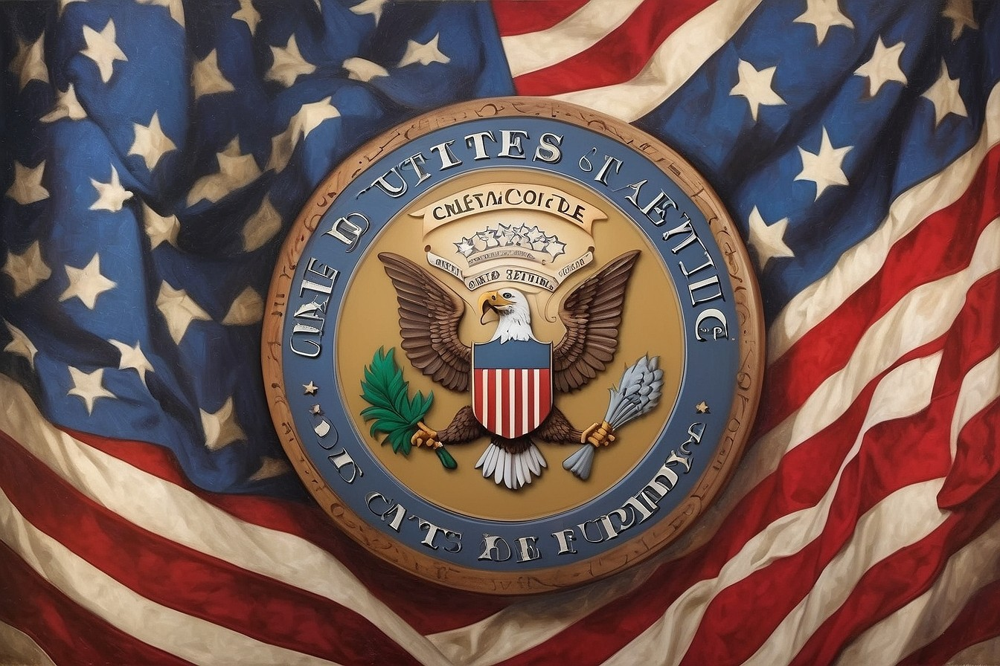

United States Code (U.S.C)
Introduction
The United States Code, often abbreviated as the U.S. Code, is a comprehensive compilation
and codification of the general and permanent federal laws of the United States. It is a vital
legal resource that providesaccess to the laws that govern the nation, ensuring
the rule of law and maintaining order in our society
As a foundational element of the United States' legal system, the U.S. Code is
organized into various titles and chapters, covering a wide range of subjects
from civil rights and immigration to taxation and national defense.
Understanding its structure and contents is crucial for legal professionals,
scholars, policymakers, and anyone interested in the laws that shape our country.
In this website, you will be provided by information about the United States of America,
the United States Code, the background history of the Unitd States Code, sources, as well an understanding quiz.
|